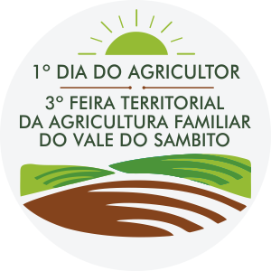

3° Feira Territorial da Agricultura Familiar do Vale do Sambito
1° Dia do Campo IFPI
2° Concurso da Cabra Leiteira Vale do Sambito
Dia 28 de Julho
1º Dia do Agricultor3° Feira Territorial da Agricultura Familiar do Vale do Sambito
1° Dia do Campo IFPI
2° Concurso da Cabra Leiteira Vale do Sambito